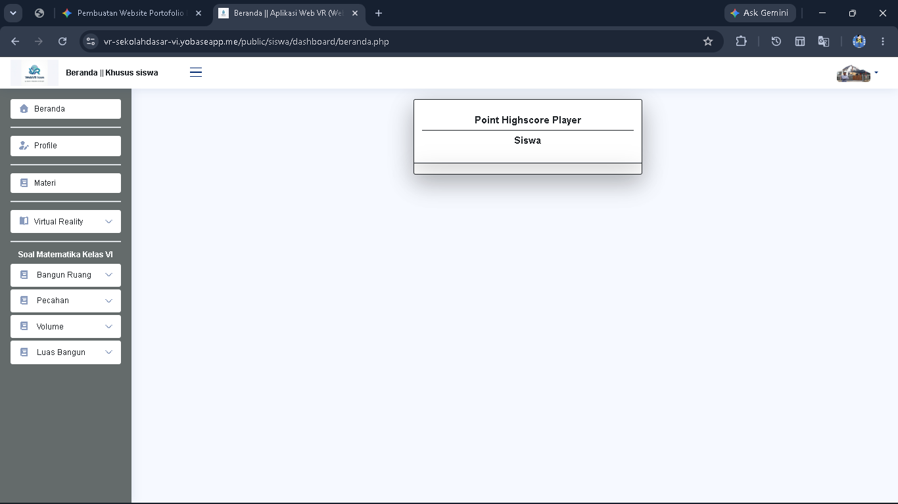
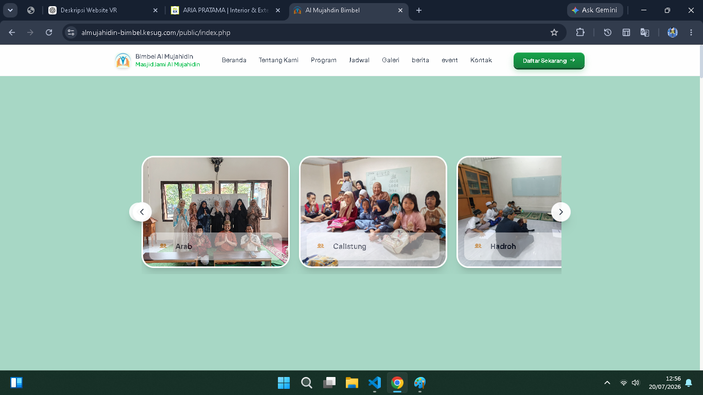
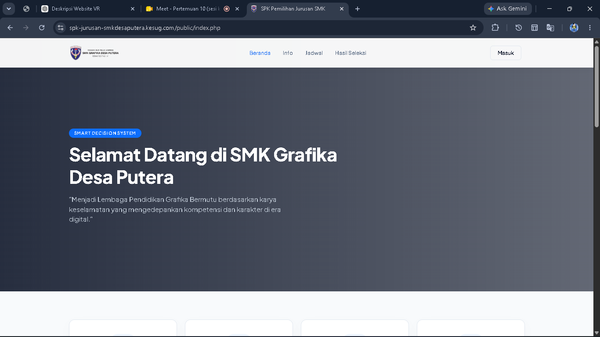
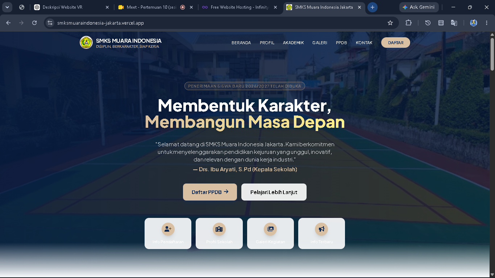
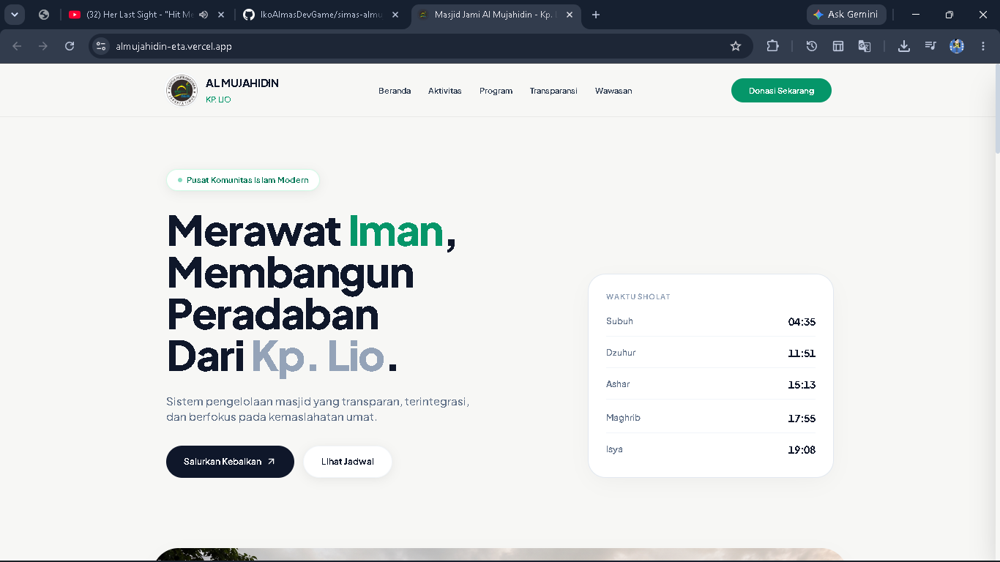
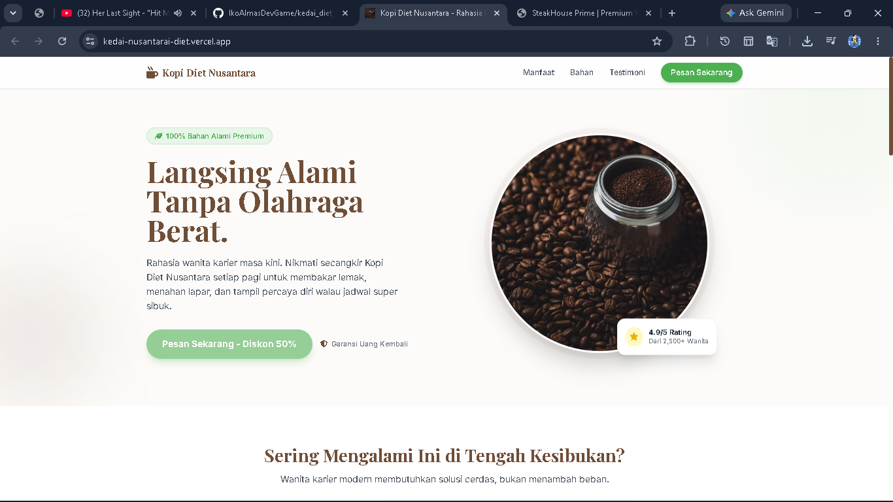
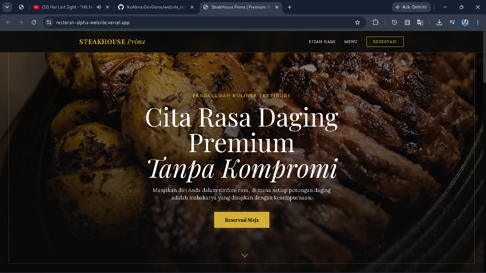

Karya Terpilih
Katalog Proyek.

Website Virtual Reality Sekolah Dasar
Virtual Reality Sekolah Dasar Kelas VI merupakan media pembelajaran interaktif berbasis teknologi Virtual Reality (VR) yang dirancang untuk membantu siswa kelas VI Sekolah Dasar memahami materi pelajaran dengan cara yang lebih menarik, menyenangkan, dan imersif. Melalui pengalaman belajar dalam lingkungan virtual, siswa dapat mengeksplorasi berbagai materi secara visual sehingga meningkatkan pemahaman, kreativitas, dan minat belajar di era digital.

Arie Pratama Interior & Exterior Design
Mitra terpercaya untuk layanan konstruksi, renovasi, serta desain interior dan eksterior. Mengutamakan kualitas, ketelitian, dan kepuasan pelanggan dalam setiap proyek yang dikerjakan.

Almujahidin Bimbel
Belajar Cerdas, Berakhlak Mulia. Bimbel Masjid Jami Al Mujahidin hadir untuk memberikan pendampingan belajar yang berkualitas, menyenangkan, dan bernilai Islami demi mendukung prestasi akademik serta pembentukan karakter generasi penerus bangsa.

SPK SMK Desa Putera
Belajar Cerdas, Berakhlak Mulia. SPK Pemilihan Jurusan SMK Desa Putera adalah sistem berbasis web yang membantu calon siswa memilih jurusan sesuai minat, bakat, dan kemampuan akademik melalui proses penilaian yang objektif, cepat, dan mudah dipahami.

Demo Website SMKS Muara Indonesia
Belajar Cerdas, Berakhlak Mulia. Membangun Generasi Unggul, Terampil, dan Berkarakter. SMKS Muara Indonesia Jakarta hadir sebagai sekolah kejuruan yang mengutamakan kualitas pendidikan, penguasaan kompetensi, serta pembentukan karakter. Melalui pembelajaran yang inovatif dan berorientasi pada kebutuhan industri, kami mempersiapkan siswa menjadi lulusan yang siap bekerja, berwirausaha, maupun melanjutkan pendidikan ke jenjang yang lebih tinggi.

Demo Website Sistem Masjid Al Mujahidin
Demo Website Masjid Jami Al Mujahidin Kp. Lio Jatinegara Cakung Jakarta Timur

Demo Website Kopi Diet Nusantara
Demo Website Kopi Diet Nusantara

Demo Website Restoran Steak House
Website Restoran Steak House